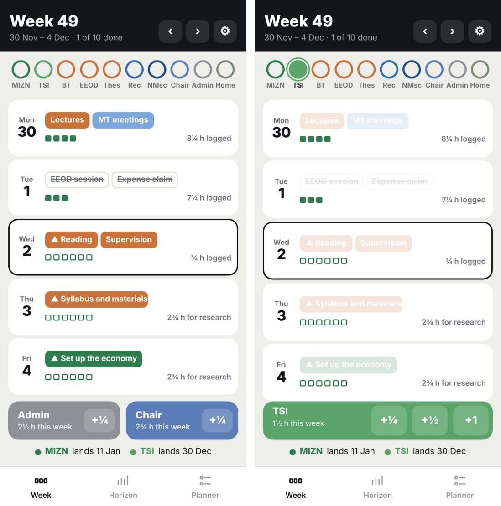
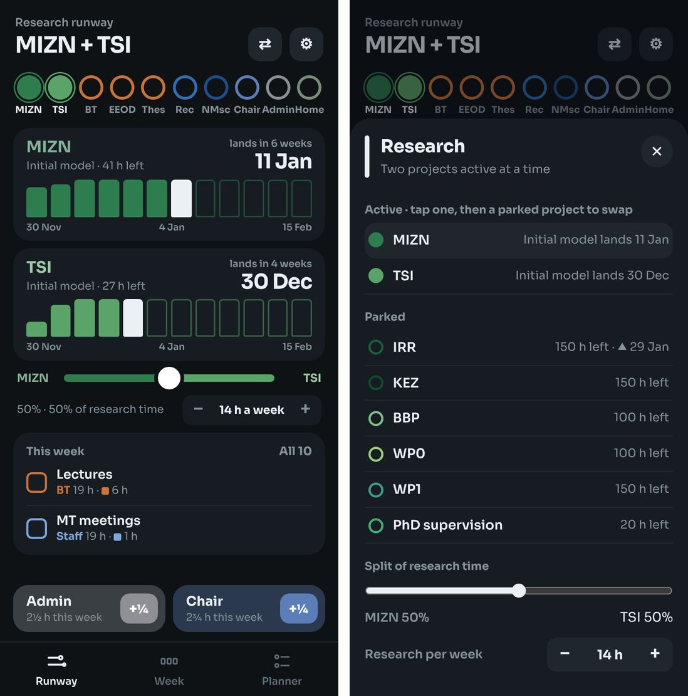
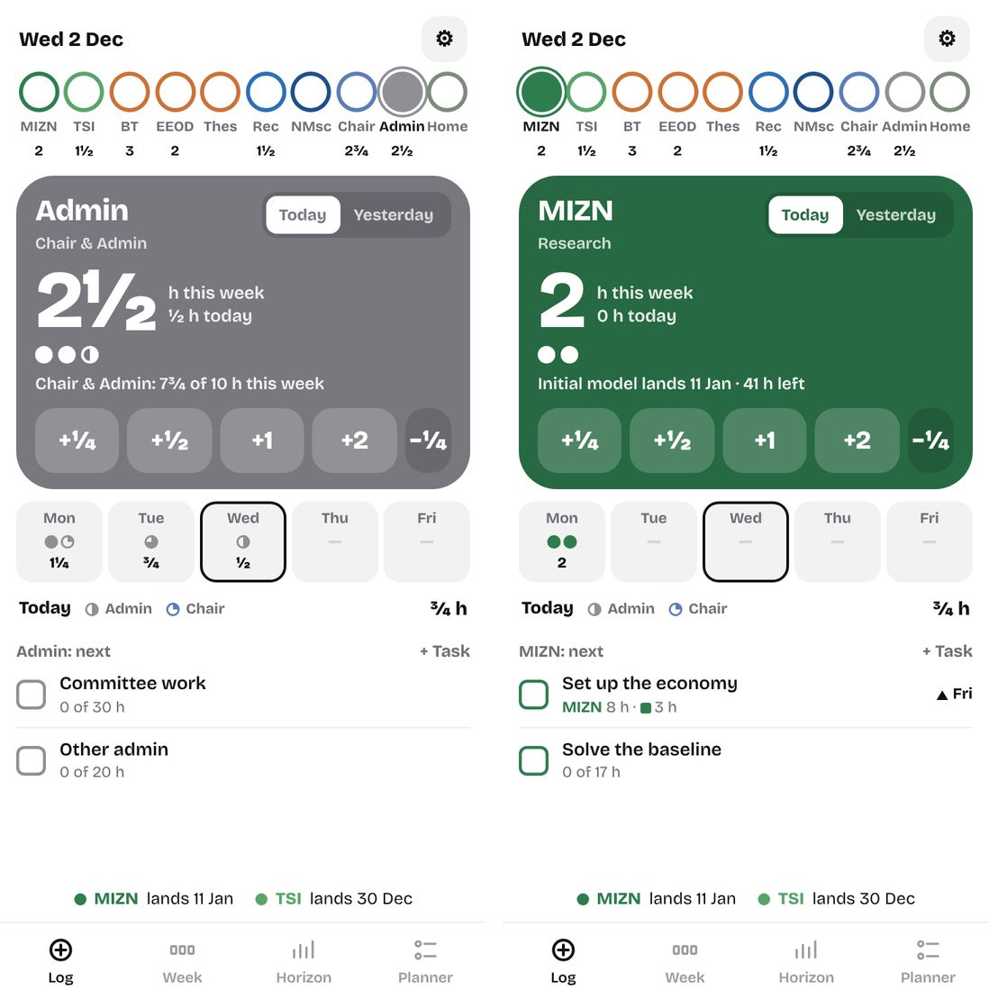
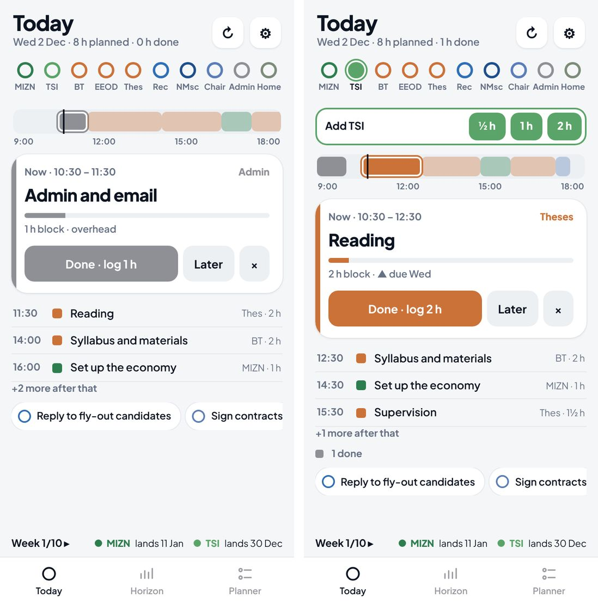
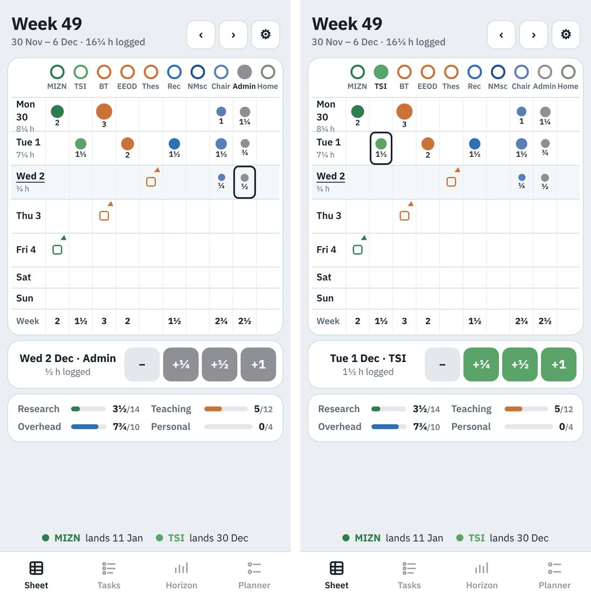
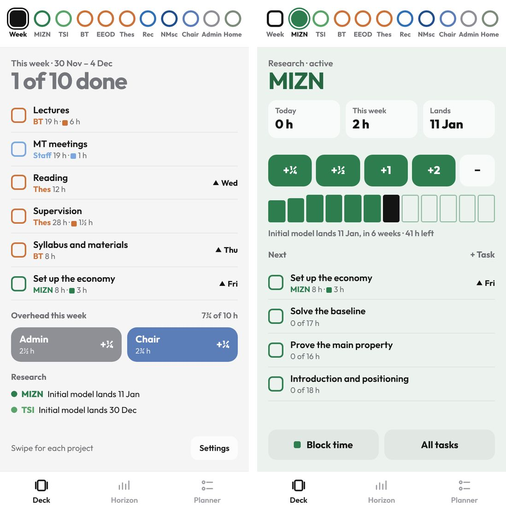
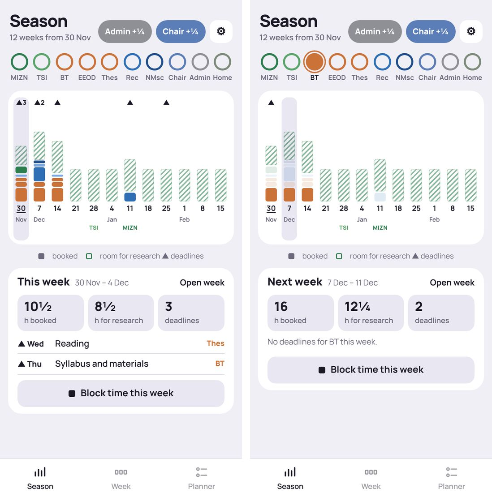
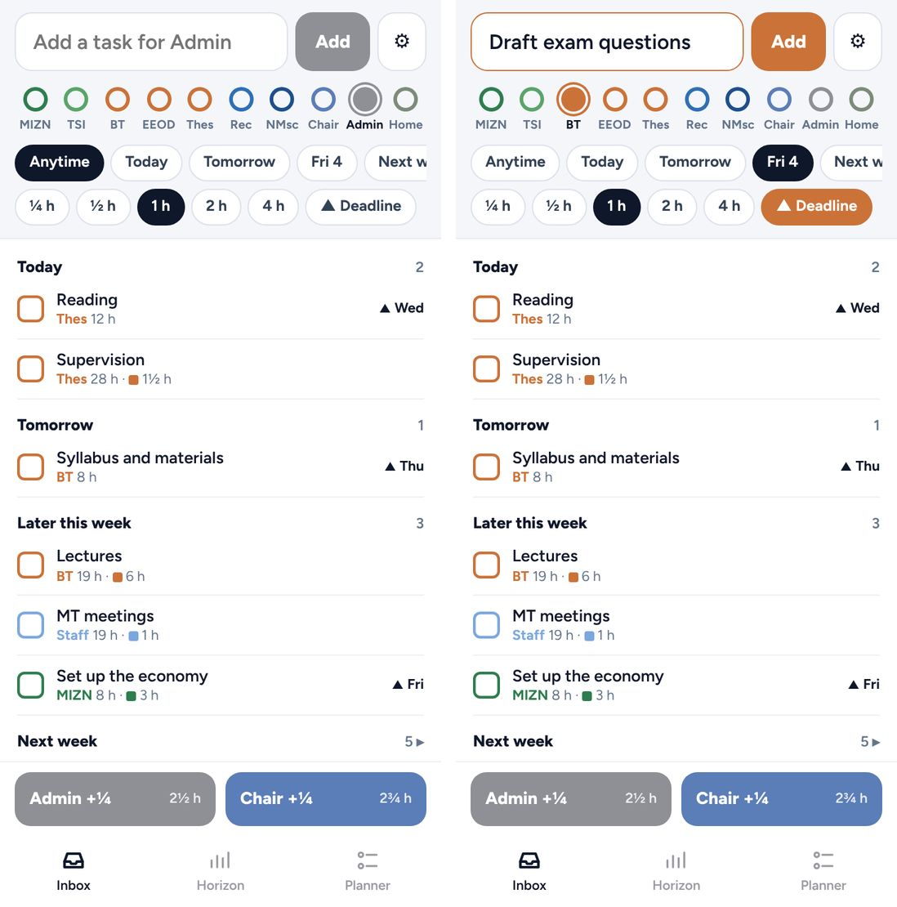
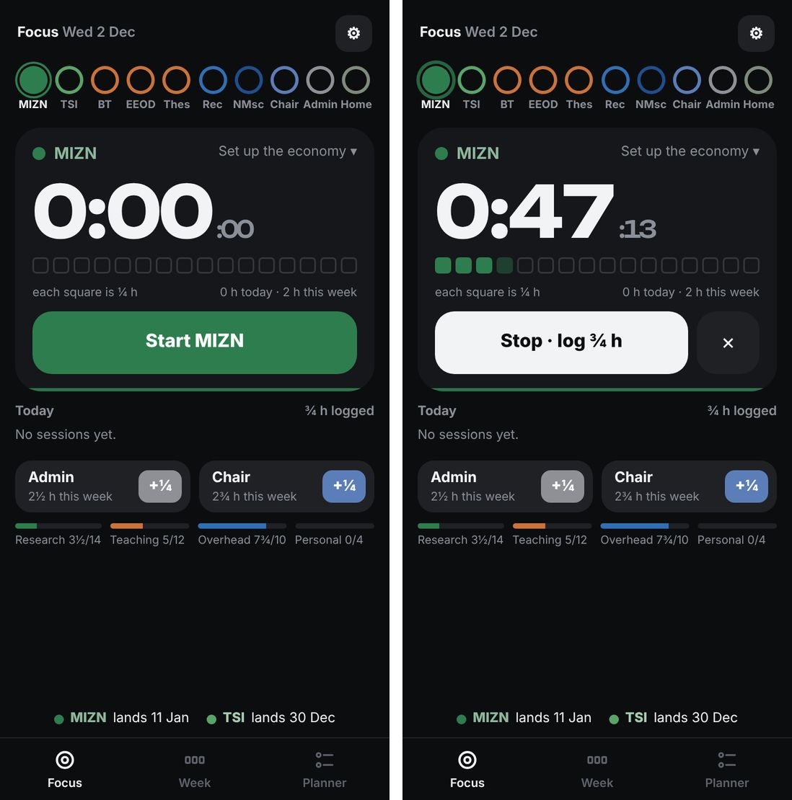
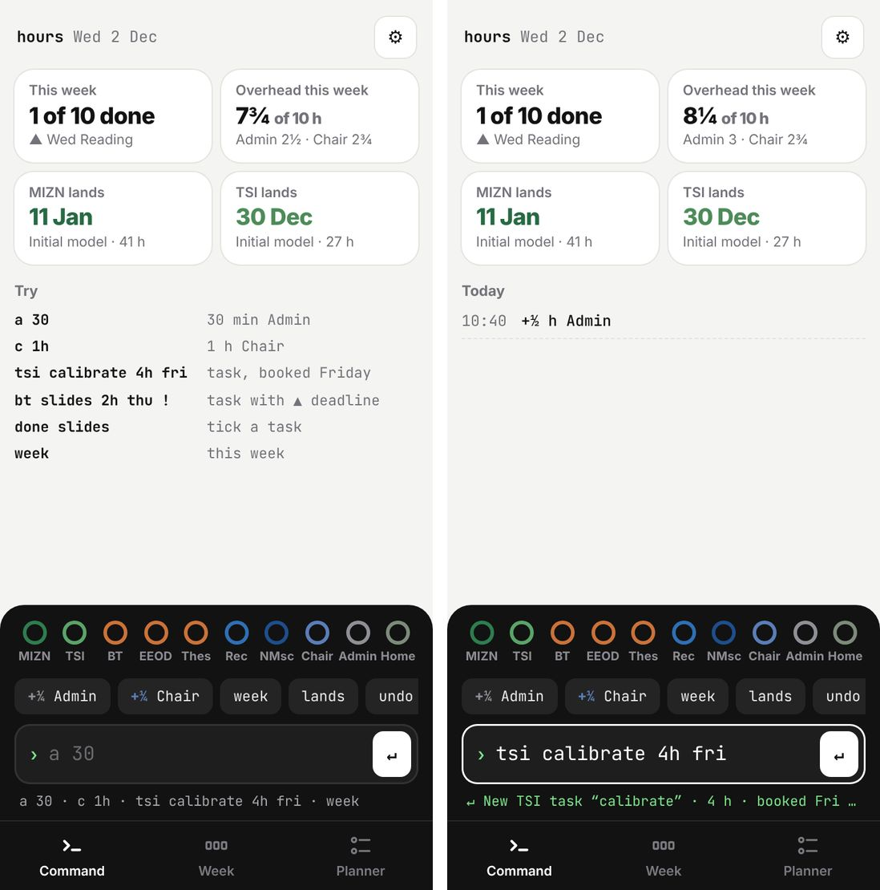

Ten complete apps built on the same few things: the 10-project row, the week's tasks, one-tap Admin and Chair logging, and when the two active research projects land. Circles are hours, squares are booked sessions, ▲ marks a deadline. Each app has a Planner, a horizon, quick tasks and undo.

01WeekThe week is the home screen. Each day shows its tasks, sessions and free research time. Admin and Chair log with one tap.Open Week
02RunwayResearch first. The two active projects get a 12-week runway that shows when their current stage lands. Steer it with the split and the research hours. Overhead logging sits at the bottom.Open Runway
03LogbookLogging first. Tap a project in the row and the screen turns its colour, with large +¼ +½ +1 +2 buttons and the week in circles. Admin is selected by default.Open Logbook
04AutopilotThe day plans itself. It fills with blocks from deadlines, Admin and Chair, the two research projects and teaching. Follow the Now card, tap Done to log, and ↻ reshuffles.Open Autopilot
05TimesheetA timesheet. The 10-project row is the column header and the days are the rows. Each circle is the hours logged. Tap a cell and log with + and −. Budgets and research landing sit below.Open Timesheet
06DeckOne page per project. The row is the page switcher: swipe or tap a dot. The first page is the week. Each project page has its log buttons, next tasks, deadlines and, for research, when the stage lands.Open Deck
07SeasonTwelve weeks as bars: booked time by project, room left for research, ▲ deadlines, and the week each research stage lands. Tap a week for details and to block time. Use the row as a lens.Open Season
08InboxCapture first. Type a task, pick its project in the row, then pick a day (as a session or a ▲ deadline) and the hours. Below that is everything due or booked, grouped by when. Admin and Chair log from the bottom bar.Open Inbox
09FocusA stopwatch. Pick a project in the row (and a task), start, and stop: the time is logged in quarter hours and counts towards the task. Admin and Chair still have one-tap +¼.Open Focus
10CommandType instead of tap. 'a 30' logs 30 minutes Admin, 'c 1h' logs Chair, 'tsi calibrate 4h fri' adds a task booked on Friday, 'bt slides 2h thu !' sets a ▲ deadline, 'week' shows the week. The row fills in the project for you.Open Command